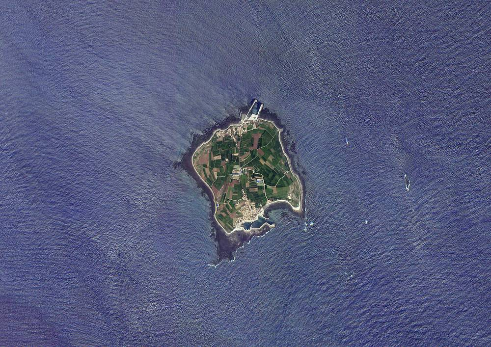

풍력 멈춘 가파도, 공공기관 주도 'RE100 마을'로 재도전…풍력 600kW·태양광 990kW·ESS 7MWh

첫 에너지 자립섬 설비 고장 끝에 2024년 9월 풍력 철거, 지금은 150kW 디젤 3대가 전기 공급…한전·에너지공단·한전KDN이 2026~2027년 추진, 예산은 220억 원 구상에서 올해 80억 원으로
제주 서귀포시 대정읍 가파도가 첫 에너지 자립섬 실험의 풍력발전기를 철거한 지 2년여 만에 한국전력공사 등 공공기관이 맡는 'RE100 마을' 조성사업으로 재생에너지 전환에 다시 나섰다. 2010년대 초반 제주도의 '카본 프리 아일랜드' 사업으로 풍력발전기 2기와 태양광·에너지저장장치(ESS)를 들였던 가파도는 발전설비와 전력변환장치 고장이 이어지면서 2024년 9월 풍력발전기를 걷어냈고, 육지 전력망과 이어지지 않은 면적 0.87㎢의 이 섬은 지금 1992년에 들인 150kW 디젤발전기 3대(총 450kW)로 전기를 만들어 지난해에만 경유 60만6,000ℓ를 썼다. 발전소를 운영하는 한전MCS의 황제영 사업소장은 바닷가 염분과 바깥에 드러난 전기설비가 고장을 키웠다고 설명하면서, 예전 사업은 고장이 났을 때 어느 기관이 수리를 책임질지 모호했고 유지보수 예산도 넉넉하지 않았던 것으로 안다고 짚었다. 2026~2027년 추진하는 새 사업은 한전이 전력 공급설비를, 한국에너지공단이 노인회관·마을회관·치안센터 등 공용시설 3곳의 히트펌프 76kW와 태양광 52.25kW를, 한전KDN이 통합제어시스템과 운영정보 공개 플랫폼을 맡으며, 핵심 설비는 200kW급 풍력 3기(600kW)와 태양광 990kW, 외부 전력망 없이 전압·주파수를 스스로 잡는 그리드포밍 방식의 바나듐 흐름전지 ESS 7MWh로 국내 기업 설비를 우선 쓴다. 처음 220억 원으로 구상한 예산은 올해 80억 원으로 확정됐고 내년 57억7,000만 원이 잠정 제시됐으며, 한전은 올해 8월 공급설비 기본계획을 확정하고 태양광·ESS 구매 절차를 밟고 있다. 현장에서는 설비가 제대로 돌면 재생에너지 공급 비중이 80% 이상으로 오를 것으로 기대하지만, 알려진 사업 구성에 주민 출자나 수익 공유 방안은 없으며, 한 주민은 이번에는 발전기만 세우지 말고 고장이 나도 곧바로 고칠 수 있는 체계를 갖춰 달라고 말했다.
시민에너지 관점
덴마크 삼쇠섬은 육상 풍력발전기 11기를 섬 농민과 주민 협동조합이 나눠 소유해 운영하면서, 설비가 멈추면 손해를 보는 사람이 곧 고칠 책임을 지는 사람이 되는 구조를 만들었다. 가파도의 첫 실험이 무너진 것은 바람이나 설비가 모자라서가 아니라 고장이 났을 때 누가 고칠지 정해지지 않았기 때문이며, 이번에는 한전이 운영을 맡으니 걱정 없다는 시각도 있지만 220억 원 구상이 80억 원으로 줄어든 것처럼 예산과 담당이 바뀌면 기관 사이 책임 공백은 언제든 다시 생길 수 있다. 섬의 바람과 햇빛으로 돌아갈 설비라면 주민이 일부라도 소유하고 운영 협의에 참여해야 운영정보 공개 플랫폼이 실제 감시 수단이 되고, 재생에너지가 만들어 낼 몫의 일부도 섬에 남는다. 정부와 한전은 설비 발주가 끝나기 전에 주민이 운영 협의와 지분 참여에 들어올 수 있는 길을 사업 계획에 넣어야 한다.
출처: 아시아경제 2026-11-01 강나훔 원문 보기
風力が止まった加波島、公的機関主導の「RE100村」で再挑戦…風力600kW・太陽光990kW・ESS 7MWh
最初のエネルギー自立島は設備故障の末に2024年9月に風力撤去、現在は150kWディーゼル3台が電力供給…韓電・エネルギー公団・韓電KDNが2026～2027年に推進、予算は220億ウォンの構想から今年80億ウォンに
済州道西帰浦市大静邑の加波島（カパド）が、最初のエネルギー自立島の実験で使った風力発電機を撤去してから2年余りで、韓国電力公社など公的機関が担う「RE100村」造成事業により再生可能エネルギーへの転換に再び乗り出した。2010年代初めに済州道の「カーボンフリーアイランド」事業で風力発電機2基と太陽光・エネルギー貯蔵装置（ESS）を導入した加波島は、発電設備や電力変換装置の故障が続いた末に2024年9月に風力発電機を撤去し、本土の電力網とつながっていない面積0.87㎢のこの島は現在、1992年に導入した150kWのディーゼル発電機3台（計450kW）で電気をつくり、昨年だけで軽油60万6,000リットルを使った。発電所を運営する韓電MCSのファン・ジェヨン事業所長は、海辺の塩分と屋外に露出した電気設備が故障を大きくしたと説明し、以前の事業では故障時にどの機関が修理の責任を負うのかがあいまいで、維持補修の予算も十分ではなかったと聞いていると指摘した。2026～2027年に進める新事業では、韓電が電力供給設備を、韓国エネルギー公団が老人会館・村会館・治安センターなど公共施設3カ所のヒートポンプ76kWと太陽光52.25kWを、韓電KDNが統合制御システムと運営情報公開プラットフォームを担い、中核設備は200kW級風力3基（600kW）と太陽光990kW、外部電力網なしで電圧・周波数を自ら形成するグリッドフォーミング方式のバナジウムフロー電池ESS 7MWhで、国内企業の設備を優先して使う。当初220億ウォンで構想した予算は今年80億ウォンで確定し、来年は57億7,000万ウォンが暫定的に示されており、韓電は今年8月に供給設備の基本計画を確定して太陽光・ESSの購入手続きを進めている。現場では設備が正常に動けば再生可能エネルギーの供給比率が80%以上に上がると期待されているが、明らかになっている事業構成に住民出資や収益共有の仕組みはなく、ある住民は、今回は発電機を建てるだけでなく、故障してもすぐ直せる体制を整えてほしいと語った。
市民エネルギーの視点
デンマークのサムソ島では、陸上風力発電機11基を島の農家と住民協同組合が分け合って所有・運営し、設備が止まれば損をする人がそのまま修理の責任を負う人になる仕組みをつくった。加波島の最初の実験が崩れたのは風や設備が足りなかったからではなく、故障したときに誰が直すのかが決まっていなかったからであり、今回は韓電が運営を担うので心配ないという見方もあるが、220億ウォンの構想が80億ウォンに減ったように予算や担当が変われば、機関の間の責任の空白はいつでも再び生じうる。島の風と日差しで動く設備であれば、住民が一部でも所有し運営の協議に加わってこそ、運営情報公開プラットフォームが実際の監視手段となり、再生可能エネルギーが生む取り分の一部も島に残る。政府と韓電は、設備の発注が終わる前に、住民が運営協議と出資に加われる道を事業計画に盛り込むべきだ。
出典: アジア経済 2026-11-01 カン・ナフム 原文を読む
风电停摆的加波岛以公共机构主导的"RE100村"再度挑战…风电600kW、光伏990kW、储能7MWh
首个能源自立岛因设备故障于2024年9月拆除风机，目前由3台150kW柴油发电机供电…韩电、能源公团、韩电KDN于2026～2027年推进，预算从最初构想的220亿韩元降至今年的80亿韩元
济州道西归浦市大静邑的加波岛在拆除首轮能源自立岛实验的风力发电机两年多之后，借助由韩国电力公社等公共机构承担的"RE100村"建设项目，再次向可再生能源转型发起挑战。加波岛在2010年代初通过济州道的"无碳岛"（Carbon Free Island）项目引入了2台风力发电机以及光伏和储能系统（ESS），但发电设备和电力变换装置接连故障，2024年9月风机被拆除；这座面积0.87平方公里、未与本土电网相连的小岛，如今靠1992年安装的3台150kW柴油发电机（共450kW）供电，仅去年就消耗柴油60万6,000升。负责运营发电站的韩电MCS事业所长황제영（Hwang Je-young）表示，海边的盐分和暴露在外的电气设备加剧了故障，并指出过去的项目在设备出故障时由哪个机构负责维修并不明确，据他所知维护预算也不充足。2026～2027年推进的新项目中，韩电负责电力供应设施，韩国能源公团负责在老人会馆、村会馆、治安中心等3处公共设施安装76kW热泵和52.25kW光伏，韩电KDN负责综合控制系统和运营信息公开平台；核心设备为3台200kW级风机（600kW）、990kW光伏，以及无需外部电网即可自行形成电压和频率的构网型（grid-forming）钒液流电池储能7MWh，并优先采用国内企业设备。预算最初构想为220亿韩元，今年确定为80亿韩元，明年暂定57亿7,000万韩元；韩电已于今年8月确定供应设施基本计划，正在推进光伏和储能的采购程序。现场期待设备正常运转后可再生能源供电比例可升至80%以上，但目前公开的项目构成中没有居民出资或收益共享安排，一位居民表示，希望这次不要只是立起发电机，而要建立出了故障也能马上修好的体系。
市民能源视角
丹麦萨姆索岛的11台陆上风机由岛上农民和居民合作社分别持有并运营，形成了设备一停、蒙受损失的人就是负责修理的人的结构。加波岛首轮实验之所以失败，不是因为风或设备不足，而是因为出了故障该由谁来修始终没有定下来；也有看法认为这次由韩电负责运营就可以放心，但正如220亿韩元的构想缩减为80亿韩元那样，一旦预算和负责部门发生变化，机构之间的责任真空随时可能再次出现。既然是靠海岛的风和阳光运转的设施，就应让居民哪怕持有一部分并参与运营协商，运营信息公开平台才能成为真正的监督工具，可再生能源创造的收益也才能有一部分留在岛上。政府和韩电应在设备采购完成之前，把居民参与运营协商和入股的途径写进项目计划。
来源: 亚洲经济 2026-11-01 강나훔（Kang Na-hum） 查看原文
Gapado, where wind power stopped, tries again as a public-agency-led "RE100 village" with 600kW of wind, 990kW of solar and 7MWh of storage
The first energy self-sufficient island removed its wind turbines in September 2024 after equipment failures and now runs on three 150kW diesel generators; KEPCO, the Korea Energy Agency and KEPCO KDN will carry out the 2026-2027 project, whose budget has shrunk from a planned 22 billion won to 8 billion won this year
Gapado, a small island in Daejeong-eup, Seogwipo, Jeju, has set out again toward renewable energy through an "RE100 village" project run by Korea Electric Power Corporation (KEPCO) and other public agencies, a little over two years after the wind turbines from its first energy self-sufficiency experiment were dismantled. Under Jeju Province's "Carbon Free Island" project in the early 2010s, Gapado installed two wind turbines along with solar panels and an energy storage system (ESS), but repeated failures of generating equipment and power converters led to the turbines' removal in September 2024; the 0.87㎢ island, which is not connected to the mainland grid, now makes its electricity with three 150kW diesel generators installed in 1992 (450kW in total) and burned 606,000 litres of diesel last year alone. Hwang Je-young, site manager for KEPCO MCS, which runs the power station, said salt from the sea and electrical equipment left exposed outdoors worsened the breakdowns, and noted that under the earlier project it was unclear which agency was responsible for repairs when equipment failed and that, as he understood it, maintenance funding was also insufficient. In the new 2026-2027 project, KEPCO will build the power supply facilities, the Korea Energy Agency will install 76kW of heat pumps and 52.25kW of solar at three public buildings including the senior centre, village hall and police post, and KEPCO KDN will provide an integrated control system and a platform publishing operating data; the core equipment is three 200kW-class wind turbines (600kW), 990kW of solar and a 7MWh vanadium flow battery using grid-forming technology that sets voltage and frequency without an external grid, with priority given to equipment from Korean companies. The budget, first envisioned at 22 billion won, was confirmed at 8 billion won this year, with 5.77 billion won tentatively proposed for next year, and KEPCO finalised its basic plan for the supply facilities in August and is procuring the solar panels and ESS. On site, there are hopes that renewables could supply 80% or more of the island's power once the equipment runs properly, but the project as described includes no resident investment or revenue sharing, and one resident said that this time they want not just new turbines but a system that can fix breakdowns right away.
Citizen Energy View
On Denmark's Samsø island, the 11 onshore wind turbines are owned and run by local farmers and resident cooperatives, creating a structure in which the people who lose money when a turbine stops are the same people responsible for fixing it. Gapado's first experiment failed not for lack of wind or equipment but because no one had settled who would repair it when it broke; some say there is nothing to worry about now that KEPCO runs it, yet just as a 22-billion-won plan shrank to 8 billion won, a gap in responsibility between agencies can open again whenever budgets or managers change. For equipment that runs on the island's own wind and sun, residents should own at least part of it and take part in operating decisions, so that the open-data platform becomes a real means of oversight and some of the value renewables create stays on the island. The government and KEPCO should write a path for residents to join operating decisions and take equity stakes into the project plan before equipment procurement is finished.
Source: The Asia Business Daily 2026-11-01 Kang Na-hum Read the original